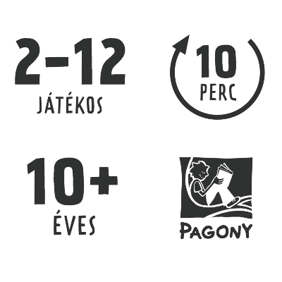

HAGYMA

Ismerjük egymást?
A Hagyma egy gyors, könnyen tanulható, 2-től 12 főig játszható, ön- és társismereti beszélgetős kártyajáték.
Egy különleges ön- és társismereti kártyajáték, amelyben a játékosoknak egymást kell minél jobban kiismerniük. A kompetitív játékmenet és a beszélgetések egyszerre teszik izgalmassá és szórakoztatóvá, ráadásul 2 játékossal és nagyobb társaságban is ugyanúgy működik. Egy parti mindössze 10–15 perc, így ideális családi és baráti összejövetelekre, bulikra vagy egy gyors társasjátékhoz.
Hogyan kell játszani?
Minden körben egy játékos három különböző tulajdonság közül rangsorolja, hogy melyik mennyire jellemző rá. A többiek közben megpróbálják kitalálni ezt a sorrendet, majd egyszerre felfedik a saját tippjeiket.
➊
Válasszatok egy HAGYMÁT! A HAGYMA lesz az aktuális játékos, akiről a többiek eldöntik, melyik tulajdonságok jellemzőek rá leginkább.
➋
Olvassátok el a 3 tulajdonságkártyát! Minden körben három különböző tulajdonság közül kell eldönteni, melyik illik leginkább és legkevésbé a HAGYMÁRA.
➌
Titokban szavazzatok! A HAGYMA a saját magára jellemző sorrendet állítja fel, a többiek pedig azt, hogy szerintük melyik tulajdonság jellemző rá a leginkább.
➍
Fordítsátok fel a szavazólapokat, és beszéljétek meg az eredményt! Kiderül, mennyire ismeritek egymást, és hogy a HAGYMA önmagáról alkotott képe mennyire egyezik a többiek véleményével.
➎
Adjátok tovább a HAGYMA-jelölőt, és folytassátok a játékot! A HAGYMA társasjáték alapjátéka addig tart, amíg mindenki legalább egyszer sorra nem kerül; pontozással pedig versengő játékmódban is játszhattok.
Minél jobban ismeritek egymást, annál több pontot lehet szerezni – de a legjobb pillanatokat általában nem is a pontok, hanem a meglepő válaszok és a közös beszélgetések adják. Egy-egy kör után szinte mindig előkerülnek történetek, emlékek vagy vicces viták arról, hogy ki milyen valójában.
